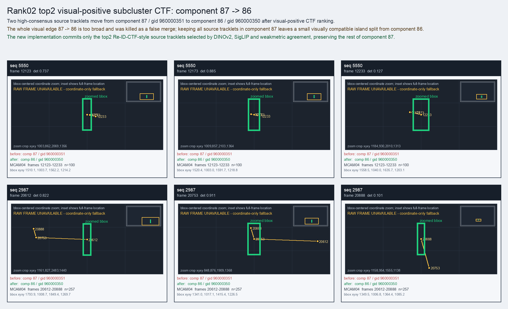

Rank02 top2 visual-positive subcluster CTF: component 87 -> 86
Two high-consensus source tracklets move from component 87 / gid 960000351 to component 86 / gid 960000350 after visual-positive CTF ranking.
Before
component 87, gid 960000351, component_size 147
component 87, gid 960000351, component_size 147
After
component 86, gid 960000350, component_size 162, decision_status manifest_reassign
component 86, gid 960000350, component_size 162, decision_status manifest_reassign
Evidence
target_sim=0.8902, target_margin=0.0000, source_rest_margin=0.0000
Raw frame
unavailable_coordinate_fallback
target_sim=0.8902, target_margin=0.0000, source_rest_margin=0.0000
Raw frame
unavailable_coordinate_fallback
Failure and fix
Old failure: The whole visual edge 87 -> 86 is too broad and was killed as a false merge; keeping all source tracklets in component 87 leaves a small visually compatible island split from component 86.
New implementation: The new implementation commits only the top2 Re-ID-CTF-style source tracklets selected by DINOv2, SigLIP and weakmetric agreement, preserving the rest of component 87.
BBox evidence

Moved tracklets
| seq | video | gid | component | frames | dets |
|---|---|---|---|---|---|
| 5550 | vlincs_MS01_MC0001_MCAM04_2024-03-Tc6 | 960000351 -> 960000350 | 87 -> 86 | 12123-12233 | 100 |
| 2987 | vlincs_MS01_MC0001_MCAM04_2024-03-Tc6 | 960000351 -> 960000350 | 87 -> 86 | 20612-20888 | 257 |